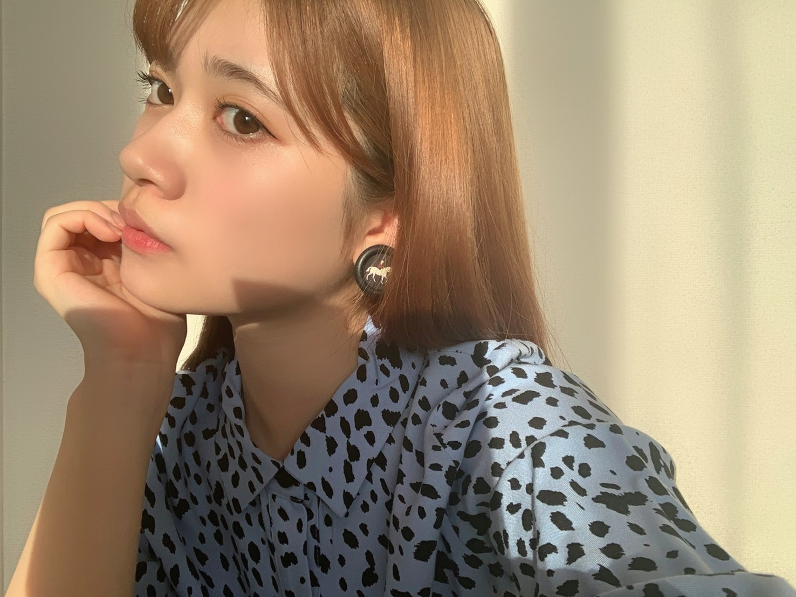
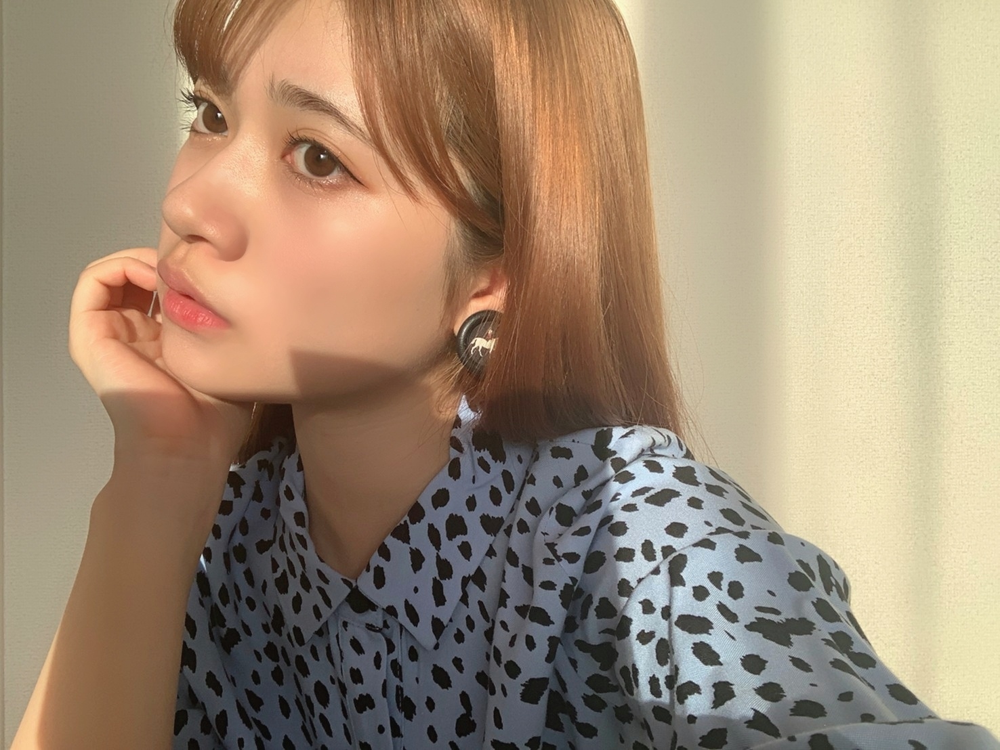
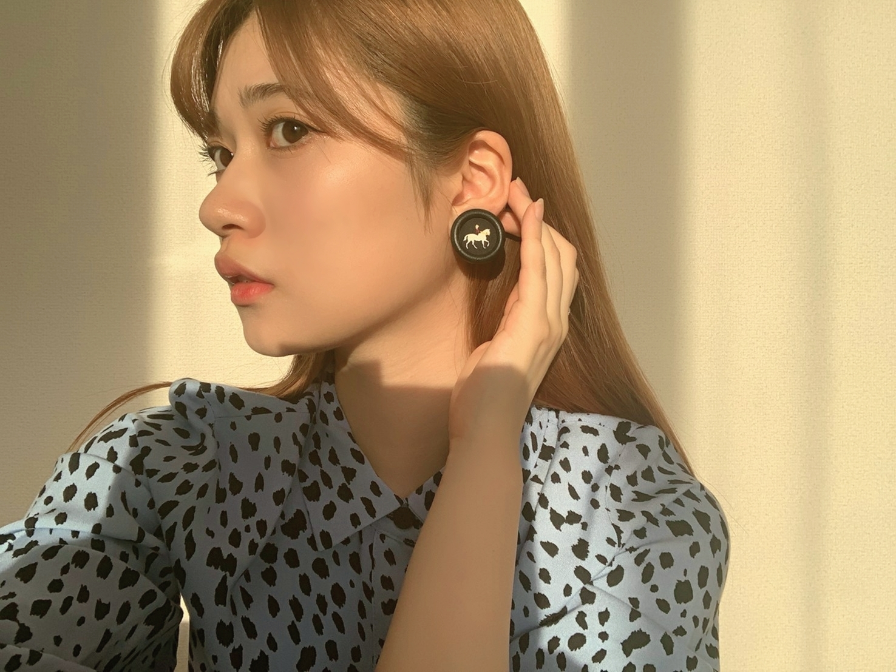
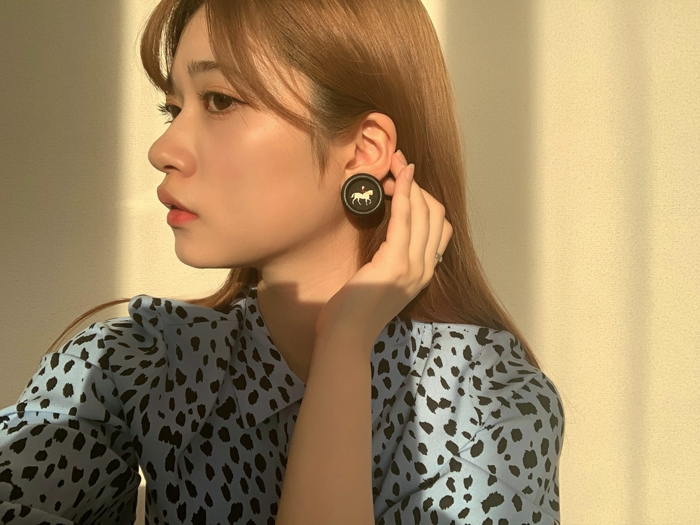
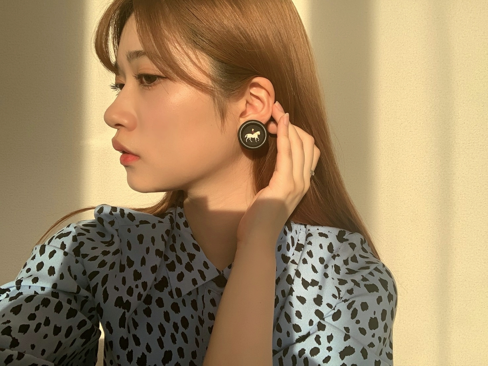
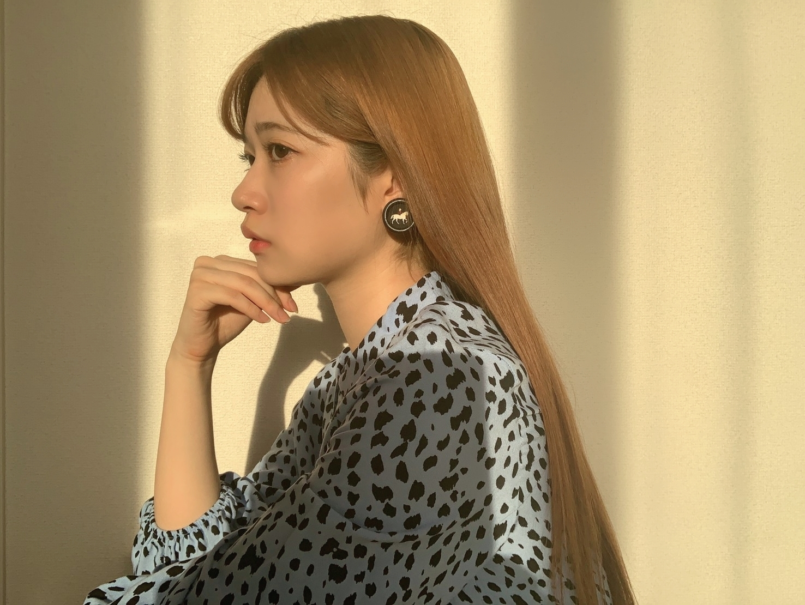

2020/0610Wed&
私の心を豊かにしてくれる
ファッション。☺️
お洋服を見たり
新しい服に袖を通すときが幸せな瞬間です。
お家時間も増えましたが
パジャマから着替えるだけでも
特別な気分になります。
お家で、もやもやしてる方
どうしてもメリハリがつかなくてだらだらしちゃう事も私もありますが
着替えるだけでもスッキリします！
おすすめー！


私の幼稚園児の頃にハマっていた曲
沢山あるけど
最近、久々に恋の嵐聴いたら懐かしい気持ちになりましたー
よかったら聴いてみてくださいね。☺️
好きだな。☺️




もう、髪色変えましたー
自分の想像以上にブログのコメントやのぎおびでも沢山の方に褒めてもらえて
私は幸せ者だと思いました！！！
私に産んでくれた親やご先祖様に感謝です。☺️☺️☺️
それと、私に自信を授けてくれた
ファンの人にも感謝。☺️☺️☺️
何にしたかは秘密にしておきます。
いつかのお楽しみ
でも、お見かけする前には色変わったり抜けちゃうかな。
色んな私を楽しんでねー！！？
2020/06/10 20:18
コメント(595)
蘭世〜収録お疲れ様！！
そうね〜、握手はもちろんしたいけどまだ難しいとこよね´д` ;
他のとこではオンライン会話など色々やってるみたいだけどやっぱその場で生で会うのが醍醐味ってのもあるしな。
46時間テレビもいよいよ来週だね！
もちろん観るの楽しみにしてるよ♪
こんばんは！
モバメありがとう！
今日の収録はもしや乃木中だな？？
久しぶりにリモートじゃない回だーー！
やったね！
アルコール消毒俺も日々して手ガサガサになってる笑
かゆくもなったりするけど
消毒しないとねー
アクリル板隔ててお話だけでもしたい！
とは思うけれど中々実現は難しいよね…
あ、でも他のアイドルグループさんがやってるリモート握手会とかやって見たいよね！
んーーでもそれも難しいのかな？
大丈夫な世の中になるまで握手券は大切に取ってるよ
46時間テレビ、見れる限り起きて見るよーー！！
電視台楽しみだな〜何の企画が待ってるんだろ？
実は昨日少し体調崩し気味だったんだ…泣
普通の疲労って言われたから安心してね！
頑張って働いてたのかなとかプラスに考えて
ゆっくり寝て休んだら元気になったよ
毎日気を張って頑張りすぎるとよくないね
程よく力を抜いて何でもしないとやね！
蘭世も体調にはお気をつけて！
梅雨だから雨に打たれたりしたら温かくするんだぞー
って体調崩し気味だったから説得力ないな笑
またねー！
モバメありがとう！
今日の収録はもしや乃木中だな？？
久しぶりにリモートじゃない回だーー！
やったね！
アルコール消毒俺も日々して手ガサガサになってる笑
かゆくもなったりするけど
消毒しないとねー
アクリル板隔ててお話だけでもしたい！
とは思うけれど中々実現は難しいよね…
あ、でも他のアイドルグループさんがやってるリモート握手会とかやって見たいよね！
んーーでもそれも難しいのかな？
大丈夫な世の中になるまで握手券は大切に取ってるよ
46時間テレビ、見れる限り起きて見るよーー！！
電視台楽しみだな〜何の企画が待ってるんだろ？
実は昨日少し体調崩し気味だったんだ…泣
普通の疲労って言われたから安心してね！
頑張って働いてたのかなとかプラスに考えて
ゆっくり寝て休んだら元気になったよ
毎日気を張って頑張りすぎるとよくないね
程よく力を抜いて何でもしないとやね！
蘭世も体調にはお気をつけて！
梅雨だから雨に打たれたりしたら温かくするんだぞー
って体調崩し気味だったから説得力ないな笑
またねー！
メールありがとう☺︎
アルコールね、、、
私はケーキ屋さんでバイトしてるからひたすら消毒してるんだけど、もう乾燥が酷い、、
ハンドクリームが欠かせません(*_*)
換気も大切だよね！
最近は冷房つけちゃってるけど、換気もこまめにするように心がけてます。
収録お疲れ様です！
久々にメンバーにも会えて良かったですね☺️
少しづつ今までの日常が戻ってきている気もしますが、まだまだ気を緩めず過ごしたいです。
早くわちゃわちゃできるようになりたいね！
私も蘭世ちゃんに会いたいなーって毎日思ってます！！
現実問題、色々難しいですよね、、、
個人的には蘭世ちゃんにインスタやってほしい！
ファッション、メイク、蘭世ちゃんの見た景色、食べたものとかとか
面白いものになりそうだな〜って。
あとは、showroomの配信とかかな？
46時間TVも本当に楽しみです☺️
蘭世ちゃんからメールがくると、その日はすごくHappyな気持ちになります♡
アルコールね、、、
私はケーキ屋さんでバイトしてるからひたすら消毒してるんだけど、もう乾燥が酷い、、
ハンドクリームが欠かせません(*_*)
換気も大切だよね！
最近は冷房つけちゃってるけど、換気もこまめにするように心がけてます。
収録お疲れ様です！
久々にメンバーにも会えて良かったですね☺️
少しづつ今までの日常が戻ってきている気もしますが、まだまだ気を緩めず過ごしたいです。
早くわちゃわちゃできるようになりたいね！
私も蘭世ちゃんに会いたいなーって毎日思ってます！！
現実問題、色々難しいですよね、、、
個人的には蘭世ちゃんにインスタやってほしい！
ファッション、メイク、蘭世ちゃんの見た景色、食べたものとかとか
面白いものになりそうだな〜って。
あとは、showroomの配信とかかな？
46時間TVも本当に楽しみです☺️
蘭世ちゃんからメールがくると、その日はすごくHappyな気持ちになります♡
蘭世さん、こんばんは
たーやーん です(^ ^)。
ブログ更新、ありがとうございます。
服…自分も服が好きです。
色々とお店で試着したり、気に入って予算が合えば購入してきます。
外出する際に、ちょっと着替えたりするだけで、気分が変わりますよね。
この自粛期間中、朝一に必ず着替えていました。
外に出る事がないかな？と思う日も着替えておくと、ONモードになりますよね♪。
46時間TVも近づいてきましたね。
後、1週間ですよ〜(o^^o)。
2期生は【修学旅行の夜】で、修学旅行の夜を疑似体験するのですよね。
どんな展開になるのか？枕投げとかするのかな？美味しいご当地料理を食べたりするのかな？楽しみですね。
後は、蘭世さんが電視台で、どんな事にチャレンジするのか？楽しみです。
前の生着替えは、観ていてハラハラ！ドキドキでした。
そうそう！【世界中の隣人よ】の配信日が決まりましたね^ - ^。
17日から配信と出ていたので、当日ダウンロードしたいと思います。
これで、どこでも聴けるようになりますね♪♪♪。
*･゜ﾟ･*:.｡..｡.:*･'*:.｡. .｡.:*･゜ﾟ･*
話は変わって…木曜日、定期の検査と診察の為、病院へ行って来ました。
まあ、結果から言うと…うーん、あまり良くなっていなかったです(TT)。
以前、コメントに書いたのですが、今現在治療の為、会社を長くお休みしている状態です。
検査の結果内容が良くて、主治医の先生からもOKが出れば、会社への復帰に近づいたのですが、見送りとなってしまいました…残念。
前回の通院時よりも、そこそこ良い感じなのでは？と、自分自身で感じていたのですが、しょうがないですね。
家族の為にも会社へ復帰したかった…。
こればかりは、自分で大丈夫！と言っても、主治医の先生と会社がOKと言ってくれなければ、復帰は無理なので…。
来月の検査と診察まで、また少しづつ頑張ろうと思います。
と言いつつ、帰宅してから一日ぐらいは、落ち込んでいました(-_-;)。
今、蘭世さんは、お仕事なのかな？。
梅雨入りしましたし、蒸し暑い日々が続いているので、水分補給をしっかりと行って下さいね。
体を休められる時は、ゆっくりして下さい。
気分転換もしてね〜。
では、また来ます。
いつも、ありがとう。
蘭世さんにとって、笑顔がいっぱいの素敵な一日になりますように・・・。
たーやーん です(^ ^)。
ブログ更新、ありがとうございます。
服…自分も服が好きです。
色々とお店で試着したり、気に入って予算が合えば購入してきます。
外出する際に、ちょっと着替えたりするだけで、気分が変わりますよね。
この自粛期間中、朝一に必ず着替えていました。
外に出る事がないかな？と思う日も着替えておくと、ONモードになりますよね♪。
46時間TVも近づいてきましたね。
後、1週間ですよ〜(o^^o)。
2期生は【修学旅行の夜】で、修学旅行の夜を疑似体験するのですよね。
どんな展開になるのか？枕投げとかするのかな？美味しいご当地料理を食べたりするのかな？楽しみですね。
後は、蘭世さんが電視台で、どんな事にチャレンジするのか？楽しみです。
前の生着替えは、観ていてハラハラ！ドキドキでした。
そうそう！【世界中の隣人よ】の配信日が決まりましたね^ - ^。
17日から配信と出ていたので、当日ダウンロードしたいと思います。
これで、どこでも聴けるようになりますね♪♪♪。
*･゜ﾟ･*:.｡..｡.:*･'*:.｡. .｡.:*･゜ﾟ･*
話は変わって…木曜日、定期の検査と診察の為、病院へ行って来ました。
まあ、結果から言うと…うーん、あまり良くなっていなかったです(TT)。
以前、コメントに書いたのですが、今現在治療の為、会社を長くお休みしている状態です。
検査の結果内容が良くて、主治医の先生からもOKが出れば、会社への復帰に近づいたのですが、見送りとなってしまいました…残念。
前回の通院時よりも、そこそこ良い感じなのでは？と、自分自身で感じていたのですが、しょうがないですね。
家族の為にも会社へ復帰したかった…。
こればかりは、自分で大丈夫！と言っても、主治医の先生と会社がOKと言ってくれなければ、復帰は無理なので…。
来月の検査と診察まで、また少しづつ頑張ろうと思います。
と言いつつ、帰宅してから一日ぐらいは、落ち込んでいました(-_-;)。
今、蘭世さんは、お仕事なのかな？。
梅雨入りしましたし、蒸し暑い日々が続いているので、水分補給をしっかりと行って下さいね。
体を休められる時は、ゆっくりして下さい。
気分転換もしてね〜。
では、また来ます。
いつも、ありがとう。
蘭世さんにとって、笑顔がいっぱいの素敵な一日になりますように・・・。
らんぜの人生の生きかた・・・・カッコイイです！
乃木坂アベンジャーズですね！！
乃木坂アベンジャーズですね！！
モバメありがとう！スタジオでの収録も出来るようになったんだね！何人かとメンバーと久しぶりに会えたんだね！！
タイトル「 自分で薪を割れ、二重に温まる 」
ブログの更新ありがとう！
そしてコメント遅れてごめん！！
髪色、色々と変化させて楽しんでいるみたいだね
みなみちゃんも変えてるみたいだから、お話ししながら
二人でしているのかな。
でもさすが蘭世です☺️☺️☺️
単純の髪色を変えるだけでなく、その雰囲気にあった洋服をchoiceして、際立つイヤリング☺️
そして大人びた表情を添えてくる。。とても好きなイメージです。
今だからこそ出来る事をすぐさま実行し、その変化を楽しみ、新しい反応を吸収し次へ進む
当たり前の事なんだけど、なかなか出来ない。。
それをしている蘭世がとても好きです
ぁーーんーーまわりくどくなる(^^;
蘭世はこういうの好きじゃないよね
まーあれです
とても素敵なladyになってくれていて、女性としても
人としても尊敬しています☺️☺️☺️☺️☺️☺️
蘭世ちゃんこんばんは♪( ´θ｀)♪
リモートでない収録が出来たなんて、良かったやん
こんな状況下での仕事は貴重な１日になったんじゃないかな？
メンバーにも会えたならより新鮮な気分でお仕事出来たね
モバメで近況を知ってホントに嬉しく思うよ
これからもずっと１日１日を大切に過ごしてね
リモートでない収録が出来たなんて、良かったやん
こんな状況下での仕事は貴重な１日になったんじゃないかな？
メンバーにも会えたならより新鮮な気分でお仕事出来たね
モバメで近況を知ってホントに嬉しく思うよ
これからもずっと１日１日を大切に過ごしてね
こんばんはらんぜ(^^)！
メールありがとう！！
収録、おつかれさまでした〜。よかったですね！らんぜの嬉しそうな様子がとても伝わってきました。
らんぜの手！らんぜの綺麗なお手、ダイジョブかな〜、、、とっても心配だよ（>_<）!
でもね、すごく真剣にコロナと向き合ってて、蘭世のそういうところ、私は本当に心から大好きです。
ハンドクリームでなんとか、蘭世のとても綺麗なお手を、どうか守ってください。ブログのお写真でも蘭世の美しい手がしっかり見ることが出来て嬉しかったですよ(^^)
換気！そう、絶対にこれも大事なことだよね！私も過去のMARSとかSARSとかの東南アジアの国々がどう対処したか、の記事を読んだのだけど、換気はすごくすごく大切だよね。
メールの様子からすると、収録も安全にとりおこなわれてるようですね。本当にどこまでも安全を1番に、進めて欲しいです。コロナもそうですし、モラル的な側面でも、お仕事でらんぜがしっかりと守られますようにと、日々祈っています。らんぜが心身ともに健やかにいられることが、1番大事。
らんぜにまたあいたいね。アクリル板、なるほどね、、、スーパーのレジでもあのビニールカーテンはお薬が完成するまでは無くなることはないだろうなと、、、
らんぜに逢いたい、、、逢いたい、けど！けどね、大丈夫全然耐えられる。だってこんなにらんぜがメール、ブログで気持ちを送ってくれてるじゃない！十分だよ(^^)
今はホントにこれまでにない、とっても危機的なときだって、わかってます。最近すっごく人々の意識が緩んでるのも本当に感じます。ワクチン、治療薬が出来るまでは、実際に人が集まるイベント、ライブは控えたほうがいい。真面目に考えてはっきりとそう思います。
そこに行く、集まるまでの道程、トイレなどの問題、そして演者も裏方も観客も、帰ればそれぞれに家族、守らなければならない人が、いると思います。らんぜが言うように自分一人じゃない。守るべき人を守らなければならい。みんな。
自分ひとりだけで生きていれば、リスクをおかしてイベントがひらかれれば行くでしょうね。でもpieceだから、それはしたくないし、出来ない。
今、リスクをおかして集まるイベントやライブなどを始めるグループなどが出てきてる事も知っています。そこそこに、のっぴきならない事情があるのだろう、仕方ない理由があるのでしょう。でもね、私は出来る事ならそれはやって欲しくないって思う。会場だけの問題じゃなくて、そこにたどり着くまでの事も大いに考えて。
危険を減らすべきだと思う。欲よりも今は命を守るべきだと思う。
乃木坂にはワクチン、治療薬が出来るまでは命を守る活動をしていてほしいなと思ってます。トップアイドルグループとして、ドンと構えていて欲しいなって思います。誇りに思えるグループであって欲しい、そこは。
らんぜに逢いたい、、、とっても逢いたいよ、、、アクリル板を挟まず、蘭世のとてもとても素敵な笑顔が見えるマスクなしで、会いたい。
そして、その日は絶対に来ます。だから私はその日が来るまで、らんぜのことを想って想って想い抜いて、ずーっと応援して待ってるから。
らんぜも安心して、今出来る活動で安全第一で大切な人達の命をを守りながら、活動に励んでいてください。
らんぜは私の誇りだよ。
まずはその第一歩、アベマさんの46だね(^^)
どんなふうになるのか今回は想像つかないね！
もう準備もけっこう進んでるのかな、、、
らんぜたちは修学旅行をやるって聞いたよ〜！
蘭世の活躍すごくすごく楽しみにしてるから(^^)
リモートでなにかやって欲しいことって、蘭世メールで聞いてくれましたね、、、1つあるのですが、、、
長くなってしまったので、また書きますね！
今日もらんぜのこと大好きで、ずっと応援してたよ。まだまだ24時間ずっとずっと応援、させて。
メールありがとう！！
収録、おつかれさまでした〜。よかったですね！らんぜの嬉しそうな様子がとても伝わってきました。
らんぜの手！らんぜの綺麗なお手、ダイジョブかな〜、、、とっても心配だよ（>_<）!
でもね、すごく真剣にコロナと向き合ってて、蘭世のそういうところ、私は本当に心から大好きです。
ハンドクリームでなんとか、蘭世のとても綺麗なお手を、どうか守ってください。ブログのお写真でも蘭世の美しい手がしっかり見ることが出来て嬉しかったですよ(^^)
換気！そう、絶対にこれも大事なことだよね！私も過去のMARSとかSARSとかの東南アジアの国々がどう対処したか、の記事を読んだのだけど、換気はすごくすごく大切だよね。
メールの様子からすると、収録も安全にとりおこなわれてるようですね。本当にどこまでも安全を1番に、進めて欲しいです。コロナもそうですし、モラル的な側面でも、お仕事でらんぜがしっかりと守られますようにと、日々祈っています。らんぜが心身ともに健やかにいられることが、1番大事。
らんぜにまたあいたいね。アクリル板、なるほどね、、、スーパーのレジでもあのビニールカーテンはお薬が完成するまでは無くなることはないだろうなと、、、
らんぜに逢いたい、、、逢いたい、けど！けどね、大丈夫全然耐えられる。だってこんなにらんぜがメール、ブログで気持ちを送ってくれてるじゃない！十分だよ(^^)
今はホントにこれまでにない、とっても危機的なときだって、わかってます。最近すっごく人々の意識が緩んでるのも本当に感じます。ワクチン、治療薬が出来るまでは、実際に人が集まるイベント、ライブは控えたほうがいい。真面目に考えてはっきりとそう思います。
そこに行く、集まるまでの道程、トイレなどの問題、そして演者も裏方も観客も、帰ればそれぞれに家族、守らなければならない人が、いると思います。らんぜが言うように自分一人じゃない。守るべき人を守らなければならい。みんな。
自分ひとりだけで生きていれば、リスクをおかしてイベントがひらかれれば行くでしょうね。でもpieceだから、それはしたくないし、出来ない。
今、リスクをおかして集まるイベントやライブなどを始めるグループなどが出てきてる事も知っています。そこそこに、のっぴきならない事情があるのだろう、仕方ない理由があるのでしょう。でもね、私は出来る事ならそれはやって欲しくないって思う。会場だけの問題じゃなくて、そこにたどり着くまでの事も大いに考えて。
危険を減らすべきだと思う。欲よりも今は命を守るべきだと思う。
乃木坂にはワクチン、治療薬が出来るまでは命を守る活動をしていてほしいなと思ってます。トップアイドルグループとして、ドンと構えていて欲しいなって思います。誇りに思えるグループであって欲しい、そこは。
らんぜに逢いたい、、、とっても逢いたいよ、、、アクリル板を挟まず、蘭世のとてもとても素敵な笑顔が見えるマスクなしで、会いたい。
そして、その日は絶対に来ます。だから私はその日が来るまで、らんぜのことを想って想って想い抜いて、ずーっと応援して待ってるから。
らんぜも安心して、今出来る活動で安全第一で大切な人達の命をを守りながら、活動に励んでいてください。
らんぜは私の誇りだよ。
まずはその第一歩、アベマさんの46だね(^^)
どんなふうになるのか今回は想像つかないね！
もう準備もけっこう進んでるのかな、、、
らんぜたちは修学旅行をやるって聞いたよ〜！
蘭世の活躍すごくすごく楽しみにしてるから(^^)
リモートでなにかやって欲しいことって、蘭世メールで聞いてくれましたね、、、1つあるのですが、、、
長くなってしまったので、また書きますね！
今日もらんぜのこと大好きで、ずっと応援してたよ。まだまだ24時間ずっとずっと応援、させて。
らんぜさんおつかれさまです！
メールのお返事しますね！
僕もアルコール消毒で手ボロボロになります、、、
保湿も除菌も換気も大事ですね！
リモートでない収録いいですね！
距離を保ちながらでもやっぱり生で会えるのいいですよね！
抱きつくのはまだ我慢ですね笑
抱きつくで思い出したんですけどMr.Childrenさんの抱きしめたいって曲がありますけどいい曲ですよ！
僕もらんぜさんと生でお会いしたいです！
でもそのためのプランは難しいですよね、、、
リモートでもいいですけどやっぱり生のらんぜさんとお話したいです
46時間TVはほんといいですよね！
頑張るの見ますよー！
今日も1日おつかれさまでした！
らんぜさんおやすみなさい
メールのお返事しますね！
僕もアルコール消毒で手ボロボロになります、、、
保湿も除菌も換気も大事ですね！
リモートでない収録いいですね！
距離を保ちながらでもやっぱり生で会えるのいいですよね！
抱きつくのはまだ我慢ですね笑
抱きつくで思い出したんですけどMr.Childrenさんの抱きしめたいって曲がありますけどいい曲ですよ！
僕もらんぜさんと生でお会いしたいです！
でもそのためのプランは難しいですよね、、、
リモートでもいいですけどやっぱり生のらんぜさんとお話したいです
46時間TVはほんといいですよね！
頑張るの見ますよー！
今日も1日おつかれさまでした！
らんぜさんおやすみなさい
蘭世
お疲れ様です。
蘭世たちも少しずつ日常が戻りつつあるみたいですね。
今回の件を生かした繋がりかたを、皆んながそれぞれの考え方で進化させてくれる事を願ってます。
東京アラート？も解除されて、いろんなお店が営業を再開したみたいですが、店員さんなどがお客さんたちが安心して利用できるよう、お店の中をその都度消毒する姿をニュースなどで見かけます。
利用する自分たちも、少しでもそういった方たちに協力出来るよう、来店する際には出来ることを当たり前にする意識を持って過ごしていかないといけないと思いました。
またね
お疲れ様です。
蘭世たちも少しずつ日常が戻りつつあるみたいですね。
今回の件を生かした繋がりかたを、皆んながそれぞれの考え方で進化させてくれる事を願ってます。
東京アラート？も解除されて、いろんなお店が営業を再開したみたいですが、店員さんなどがお客さんたちが安心して利用できるよう、お店の中をその都度消毒する姿をニュースなどで見かけます。
利用する自分たちも、少しでもそういった方たちに協力出来るよう、来店する際には出来ることを当たり前にする意識を持って過ごしていかないといけないと思いました。
またね
こんにちは！
お仕事お疲れ様！
自分も蘭世に会いたいです！
46時間TVもう7日切りましたね！楽しみでしょーがないです！
今日もモバメありがとう！
夜は涼しいので体調には気をつけて！
また書きます！
おやすみ
お仕事お疲れ様！
自分も蘭世に会いたいです！
46時間TVもう7日切りましたね！楽しみでしょーがないです！
今日もモバメありがとう！
夜は涼しいので体調には気をつけて！
また書きます！
おやすみ
(*・ｪ･*)ﾉ～☆ｺﾝﾊﾞﾝﾜ♪最愛なる蘭世
お帰り、今日も一日お疲れさま！
明日はお休み～乃木中も蘭世
楽しみ～！
てか一個前と今のブログタイトルから察するに次のタイトルは…『LOVE』かな？
それに何故にpieceから書いたかなと思うとスマホやPCでも更新したのが上に来るからやね。
上から読むと『LOVE＆piece』になるかな
細かいとこにも蘭世
そいう細かなとことかおしとやかなとことか好きになる理由の一つってコメをもう十数回してるけど反映されない…なんでだろうね。
まぁそれはおいといて。
今日はこの辺でおやすみを。
蘭世
おやすみ蘭世
きっとまた明日も笑顔で(｡･ω･)ﾉﾞ
夢で逢えたらいいな。
モバメありがとうございます。
アルコール消毒しすぎるとそんなことになってしまうんですね…
除菌した後はしっかりと保湿もしていきますね！
この時期はよく雨が降るので雨が降っていない時に少しでも換気することが大切ですね。
収録お疲れ様です！
メンバーと会えて良かったですね！さっき、きいちゃんからのメールで収録があったと言っていたのですが、きいちゃんと一緒だったんですか？
スキンシップ出来ないの仕方ありませんね～
直接会って会話するのはまだまだ難しそうですよね。
例えば、抽選で何人かのファンの方達を選んでオンラインでメンバーと会話する。
とかしかなさそうですよね～
46時間TV楽しみにしてますよ！！
無理せずに頑張って下さいー
ずっと大好きですよ！！
これからも応援していきます。
アルコール消毒しすぎるとそんなことになってしまうんですね…
除菌した後はしっかりと保湿もしていきますね！
この時期はよく雨が降るので雨が降っていない時に少しでも換気することが大切ですね。
収録お疲れ様です！
メンバーと会えて良かったですね！さっき、きいちゃんからのメールで収録があったと言っていたのですが、きいちゃんと一緒だったんですか？
スキンシップ出来ないの仕方ありませんね～
直接会って会話するのはまだまだ難しそうですよね。
例えば、抽選で何人かのファンの方達を選んでオンラインでメンバーと会話する。
とかしかなさそうですよね～
46時間TV楽しみにしてますよ！！
無理せずに頑張って下さいー
ずっと大好きですよ！！
これからも応援していきます。
らんぜさんおつかれさまです！
メールのお返事しますね！
僕もアルコール消毒で手ボロボロになります、、、
保湿も除菌も換気も大事ですね！
リモートでない収録いいですね！
距離を保ちながらでもやっぱり生で会えるのいいですよね！
抱きつくのはまだ我慢ですね笑
抱きつくで思い出したんですけどMr.Childrenさんの抱きしめたいって曲がありますけどいい曲ですよ！
僕もらんぜさんと生でお会いしたいです！
でもそのためのプランは難しいですよね、、、
リモートでもいいですけどやっぱり生のらんぜさんとお話したいです
46時間TVはほんといいですよね！
頑張るの見ますよー！
今日も1日おつかれさまでした！
らんぜさんおやすみなさい
メールのお返事しますね！
僕もアルコール消毒で手ボロボロになります、、、
保湿も除菌も換気も大事ですね！
リモートでない収録いいですね！
距離を保ちながらでもやっぱり生で会えるのいいですよね！
抱きつくのはまだ我慢ですね笑
抱きつくで思い出したんですけどMr.Childrenさんの抱きしめたいって曲がありますけどいい曲ですよ！
僕もらんぜさんと生でお会いしたいです！
でもそのためのプランは難しいですよね、、、
リモートでもいいですけどやっぱり生のらんぜさんとお話したいです
46時間TVはほんといいですよね！
頑張るの見ますよー！
今日も1日おつかれさまでした！
らんぜさんおやすみなさい
お疲れ様！
おー今日は収録だったんだー
徐々にお仕事的に戻ってきてるのかな？
自分も蘭世に生で会いたいなー
ニューノーマルに移行していってる今、物理的な問題になるので色々と規模的に難しいよね(^^;)
蘭世に会うのは勿論ファン同士の交流も楽しかったのに、それさえも難しい…
蘭世やファンで共感しあえる何かツールが有れば良いんだけど、オンラインと生とはやっぱり違うんだよな〜
難しい(@_@)
46時間TVは楽しみにしてます(^_^)
有給休暇取って張り切って見ようかなと思ってます！
今年まだ有給休暇取ってないのでココで取らなきゃどこでとるんだという気持ちで申請して見よっと
梅雨入りして気候が変わって肌寒かったりするので体調には気をつけてくださいね〜
それではまた！
お疲れ様です。
来週は46時間TVだね！
画面に映る蘭世ちゃんを見逃さずに応援するよー
本当はお話しして大好きな気持ちを伝えたいけど、難しい今だからブログのコメントで少しでも応援している気持ちが伝わってくれたら嬉しいな。
大好きです。またね:-)
来週は46時間TVだね！
画面に映る蘭世ちゃんを見逃さずに応援するよー
本当はお話しして大好きな気持ちを伝えたいけど、難しい今だからブログのコメントで少しでも応援している気持ちが伝わってくれたら嬉しいな。
大好きです。またね:-)
ぜー！
こんばんは！
本日もお疲れ様です！！
モバメありがとうございます！
予防もしっかりですが、自分の身体もしっかりですね！
収録が楽しみです！
もちろん、46時間TVも！！
明日も仕事頑張ります！
明日も頑張りましょう！！(^-^)v
えいえいおー！！
誕生日まで残り102日！！
ぜーの勢い…
とまらんぜーーー！！！
No.584
こんばんは！
本日もお疲れ様です！！
モバメありがとうございます！
予防もしっかりですが、自分の身体もしっかりですね！
収録が楽しみです！
もちろん、46時間TVも！！
明日も仕事頑張ります！
明日も頑張りましょう！！(^-^)v
えいえいおー！！
誕生日まで残り102日！！
ぜーの勢い…
とまらんぜーーー！！！
No.584
蘭世さん♡
こんばんは
リモートだったら会いに行かないかなーと
HKT48さんを見てて思ったけど
蘭世さんなら、行く。
会いに行けばわかってくれるし
絶対に伝わる何かがある。
会いたいです(^-^)
週末は修学旅行気分で
お待ちしています
メンバーと会えたのはよかったね(^O^)
では、きっとまた。
引き続き、気をつけて。
おやすみ
浪速の商人（あきんど）
こんばんは
リモートだったら会いに行かないかなーと
HKT48さんを見てて思ったけど
蘭世さんなら、行く。
会いに行けばわかってくれるし
絶対に伝わる何かがある。
会いたいです(^-^)
週末は修学旅行気分で
お待ちしています
メンバーと会えたのはよかったね(^O^)
では、きっとまた。
引き続き、気をつけて。
おやすみ
浪速の商人（あきんど）
蘭世ちゃん、お疲れ様！
今日も沢山のメールを送ってくれて有難う！
今日収録で久しぶりにメンバーにお会いすることが出来て良かったですね:)
私もすごく蘭世ちゃんに会いたいよ！！！
でも緊急事態宣言は解除されたけどまだ感染する可能性があるから油断は出来ないですよねー
ファンもメンバーの安全が何よりも大切だからね。
個人的にメンバーがのぎおび だけではなく、もっと自由にSHOWROOMで配信したり、もしくは公式youtubeで動画を上げたりすることが出来たらいいなと思います。
今日も沢山のメールを送ってくれて有難う！
今日収録で久しぶりにメンバーにお会いすることが出来て良かったですね:)
私もすごく蘭世ちゃんに会いたいよ！！！
でも緊急事態宣言は解除されたけどまだ感染する可能性があるから油断は出来ないですよねー
ファンもメンバーの安全が何よりも大切だからね。
個人的にメンバーがのぎおび だけではなく、もっと自由にSHOWROOMで配信したり、もしくは公式youtubeで動画を上げたりすることが出来たらいいなと思います。
モバメ♡ありがとうございますφ(ﾟωﾟ=)ﾒﾓﾆｬﾝ
梅雨でござる(o≧▽ﾟ)oニパッ♡
冷やし中華をあむあむあむ[壁]ｴ＿)
地球が丸いなら♪アナスターシャ♪窓を開けなくても♪聴いておりまふσ(´∀`●)ｱﾀｼ ♡
前髪師匠ぱっつん寺田蘭世さまきゃわわうれぴーぽーo(￣◎￣)o ﾊﾞﾌﾞｩ♡
ほんじつもるなぴホットケーキパワー100万馬力でばいころまる( ;-(ｴ)-)ゞｸﾏｯﾀﾅｧ…
梅雨でござる(o≧▽ﾟ)oニパッ♡
冷やし中華をあむあむあむ[壁]ｴ＿)
地球が丸いなら♪アナスターシャ♪窓を開けなくても♪聴いておりまふσ(´∀`●)ｱﾀｼ ♡
前髪師匠ぱっつん寺田蘭世さまきゃわわうれぴーぽーo(￣◎￣)o ﾊﾞﾌﾞｩ♡
ほんじつもるなぴホットケーキパワー100万馬力でばいころまる( ;-(ｴ)-)ゞｸﾏｯﾀﾅｧ…
今日も1日お疲れ様でした♪o(^-^)o
そしてそして、今日もモバメを、ありがとうございました！(^^)
元気出ましたーーー♪o(^-^)o
今日は収録、お疲れ様でした♪o(^-^)o
リモートではない収録、メンバーと顔を見て話せるって、本当に嬉しいことですよね♪(人´ω｀*).｡*ﾟ+.*.｡
早く安心して笑い合える日が来て欲しいですよね！！
今日の46時間TVのインスタグラムのお写真は蘭世ちゃんでしたね♪
待ってましたーーー♪＼(^▽^)／
可愛かったです！！･:*:･(*´∀｀*)ｳｯﾄﾘ･:*:･
46時間TVめも楽しみっ♪
だんだんと日常が戻りつつありますが、まだまだみんなが近づくまでは時間がかかるでしょうね！
ほんと、蘭世ちゃんが言うように、みんなが触れ合える良い案があったら最高ですよね！
ライブも！
そんななか、46時間TVとか、2期生ライブとか、楽曲とか、乃木坂46は、良い企画がたくさん、本当に素晴らしいグループだなって思います。
また2期生ライブもして欲しいなー♪(人´ω｀*).｡*ﾟ+.*.｡
明日もファイトです♪
明日も素敵な1日になりますように♪o(^-^)o
そしてそして、今日もモバメを、ありがとうございました！(^^)
元気出ましたーーー♪o(^-^)o
今日は収録、お疲れ様でした♪o(^-^)o
リモートではない収録、メンバーと顔を見て話せるって、本当に嬉しいことですよね♪(人´ω｀*).｡*ﾟ+.*.｡
早く安心して笑い合える日が来て欲しいですよね！！
今日の46時間TVのインスタグラムのお写真は蘭世ちゃんでしたね♪
待ってましたーーー♪＼(^▽^)／
可愛かったです！！･:*:･(*´∀｀*)ｳｯﾄﾘ･:*:･
46時間TVめも楽しみっ♪
だんだんと日常が戻りつつありますが、まだまだみんなが近づくまでは時間がかかるでしょうね！
ほんと、蘭世ちゃんが言うように、みんなが触れ合える良い案があったら最高ですよね！
ライブも！
そんななか、46時間TVとか、2期生ライブとか、楽曲とか、乃木坂46は、良い企画がたくさん、本当に素晴らしいグループだなって思います。
また2期生ライブもして欲しいなー♪(人´ω｀*).｡*ﾟ+.*.｡
明日もファイトです♪
明日も素敵な1日になりますように♪o(^-^)o
蘭世おはよう❗
世界中の隣人よ観てると、また早く神宮を埋め尽くすあの紫色のサイリウムを見たいなあって思うし、アクリル板ごしでもよいので蘭世と直接お話したいなあって思う！
ただやはりどちらも大勢の人で密になるので現状では難しいよね(><)
でも、色々対策とったり変化を受け入れながらも、また乃木坂46のエンターテイメントが力強く歩き出すのを楽しみにしているよ！
細心の注意を払いながら少しずつ収録が始まったようなので、楽しみだよ！
蘭世のこと応援しているからね！
僕のほうも手をアルコールで消毒しすぎてカサカサになっちゃった(^^;
でも安心安全第一で蘭世も元気に頑張ってね
今夜の乃木中楽しみー☺️
世界中の隣人よ観てると、また早く神宮を埋め尽くすあの紫色のサイリウムを見たいなあって思うし、アクリル板ごしでもよいので蘭世と直接お話したいなあって思う！
ただやはりどちらも大勢の人で密になるので現状では難しいよね(><)
でも、色々対策とったり変化を受け入れながらも、また乃木坂46のエンターテイメントが力強く歩き出すのを楽しみにしているよ！
細心の注意を払いながら少しずつ収録が始まったようなので、楽しみだよ！
蘭世のこと応援しているからね！
僕のほうも手をアルコールで消毒しすぎてカサカサになっちゃった(^^;
でも安心安全第一で蘭世も元気に頑張ってね
今夜の乃木中楽しみー☺️
そうだ、昨日テレビで「バック・トゥ・ザ・フューチャー」観たんだけど(もう今まで何度も観てるんだけど笑)、どんどん新しい映画が誕生してるけれど、やはりこれに勝る名作はないなあって改めて思ったなあ。
とにかく面白くて80年代の音楽もいいし、50年代の古き良きアメリカも感じられて(この時代はまだ生まれてないけど(笑))、最高だった！
マーティがスケボー乗ってた時履いてた黒のハイカット観てたら蘭世は赤だなって思わず頭に浮かんだ(笑)。
今週来週part2、3と続けて放送されるみたいなので引き続き楽しみ！
蘭世も観たことあるかなー(..)？
とにかく面白くて80年代の音楽もいいし、50年代の古き良きアメリカも感じられて(この時代はまだ生まれてないけど(笑))、最高だった！
マーティがスケボー乗ってた時履いてた黒のハイカット観てたら蘭世は赤だなって思わず頭に浮かんだ(笑)。
今週来週part2、3と続けて放送されるみたいなので引き続き楽しみ！
蘭世も観たことあるかなー(..)？
らんぜ！今日も本当にお疲れさま！
ユンです
今日も楽しめた？
ぼくは楽しめたよ！
昨日学校に行って久々に友達とたくさん話したり遊んだりしてきた！
これから試験期間だから、試験前に１日だけ気分転換もしたかったしみんなで試験頑張ろう会をしてきたよ！
だから今日は一日中勉強に尽くした！
今週末に3つのレポートを書かないと行けないけど
今日のうち2つを書き終わったよ！
だから気づいたらもうこんな時間になってしまった
でも明日はちょっと楽にできたから満足です！
明日も頑張るぞー
そして今日もメール本当にありがとう！
アルコール書毒するとすぐ手紙乾燥しちゃうよね
だからぼくはその後ウェットティッシュで水分も補充してます！
もちろん一番良いのはやっぱトイレでちゃんと手を洗うことだけどね
そして換気も大事だよね！
最近すごく暑いから、エアコンをたまにつけるけど
その後ちゃんと換気しないと鼻炎も酷くなるからこまめに毎日換気してるよ！
そしてやっとリモートじゃない収録ができたのね！！
でもやっぱ適切な距離を維持してからの収録だったのね
ぼくもすごくスキンシップが好きだからすぐぎゅっと抱いてしまうけど、最近はそれが全然できないから辛い、、、
握手の代わりにエルボーで挨拶したり
みんなそれなりの対策を持ってるよな
でも大事なのは肌ではなく心で伝えるものだからね！
触れ会わなくても想いは変わらないはず！
そしてほくも本当にらんぜと会いたいよ！！
韓国ではサイン会の代わりに映像電話で推しと通話するイベントがあったな
あれも良いかもね！
画面越しじゃらんぜの可愛さがそのまま伝わらないからすれは残念だけど、、、
やっぱ握手会って形はコロナた終息しないと再開が難しい形だと思うから
画面越しとか、少ない人数だけの入場とか
どっちもやっぱ握手会以上な特別さはないからね
本当に難しい問題だなって。
特にぼくは海外にいるから、日本で握手会が再開されても国の入国制限がなくならないと結局いけないからね
制約が多いんです
だから本当に会いたいって気持ちばっか膨らんでばかり、、、
だから４６時間テレビ、本当に楽しみにしていますよ！！
そういえば４６時間テレビさんのインスタでらんぜの可愛い熊さん写真が上がってた！
めちゃめちゃ可愛かったな、、、
本当に色々楽しみです！
テスト頑張って、すっきりした気持ちで４６時間付き合おうと思ってますので、よろしく！
では、今日はこの辺で。
またね！！
ユン
ユンです
今日も楽しめた？
ぼくは楽しめたよ！
昨日学校に行って久々に友達とたくさん話したり遊んだりしてきた！
これから試験期間だから、試験前に１日だけ気分転換もしたかったしみんなで試験頑張ろう会をしてきたよ！
だから今日は一日中勉強に尽くした！
今週末に3つのレポートを書かないと行けないけど
今日のうち2つを書き終わったよ！
だから気づいたらもうこんな時間になってしまった
でも明日はちょっと楽にできたから満足です！
明日も頑張るぞー
そして今日もメール本当にありがとう！
アルコール書毒するとすぐ手紙乾燥しちゃうよね
だからぼくはその後ウェットティッシュで水分も補充してます！
もちろん一番良いのはやっぱトイレでちゃんと手を洗うことだけどね
そして換気も大事だよね！
最近すごく暑いから、エアコンをたまにつけるけど
その後ちゃんと換気しないと鼻炎も酷くなるからこまめに毎日換気してるよ！
そしてやっとリモートじゃない収録ができたのね！！
でもやっぱ適切な距離を維持してからの収録だったのね
ぼくもすごくスキンシップが好きだからすぐぎゅっと抱いてしまうけど、最近はそれが全然できないから辛い、、、
握手の代わりにエルボーで挨拶したり
みんなそれなりの対策を持ってるよな
でも大事なのは肌ではなく心で伝えるものだからね！
触れ会わなくても想いは変わらないはず！
そしてほくも本当にらんぜと会いたいよ！！
韓国ではサイン会の代わりに映像電話で推しと通話するイベントがあったな
あれも良いかもね！
画面越しじゃらんぜの可愛さがそのまま伝わらないからすれは残念だけど、、、
やっぱ握手会って形はコロナた終息しないと再開が難しい形だと思うから
画面越しとか、少ない人数だけの入場とか
どっちもやっぱ握手会以上な特別さはないからね
本当に難しい問題だなって。
特にぼくは海外にいるから、日本で握手会が再開されても国の入国制限がなくならないと結局いけないからね
制約が多いんです
だから本当に会いたいって気持ちばっか膨らんでばかり、、、
だから４６時間テレビ、本当に楽しみにしていますよ！！
そういえば４６時間テレビさんのインスタでらんぜの可愛い熊さん写真が上がってた！
めちゃめちゃ可愛かったな、、、
本当に色々楽しみです！
テスト頑張って、すっきりした気持ちで４６時間付き合おうと思ってますので、よろしく！
では、今日はこの辺で。
またね！！
ユン
蘭世おはよう❗
(何度目のおはようか？)
さっき金曜ロードショーのことコメントしちゃったけど、乃木坂46時間TVがあるので、もちろん46時間TVを優先に、映画の方は録画して後から観る(笑)。
(さっきの反映されてなければちんぷんかんぷんな話だね(^^;)。
乃木坂46時間TV
最初は蘭世も年齢の関係で出演出来ない時間帯もあったっけ？
前回は確か僕はアンダーの握手会で京都で直接観たのをめっちゃ思い出す(^^)
今回もまた色々違った形になると思うけどとても楽しみにしているよ☺️
(何度目のおはようか？)
さっき金曜ロードショーのことコメントしちゃったけど、乃木坂46時間TVがあるので、もちろん46時間TVを優先に、映画の方は録画して後から観る(笑)。
(さっきの反映されてなければちんぷんかんぷんな話だね(^^;)。
乃木坂46時間TV
最初は蘭世も年齢の関係で出演出来ない時間帯もあったっけ？
前回は確か僕はアンダーの握手会で京都で直接観たのをめっちゃ思い出す(^^)
今回もまた色々違った形になると思うけどとても楽しみにしているよ☺️
おはようー
蘭世〜おはよう
46時間TVインスタ、蘭世の写真あがってたけどめちゃめちゃ可愛かったよ
来週楽しみにしてる。
今晩は乃木中あるし明日はEX大衆発売だし最高の1週間になりそうでワクワクするわ。
蘭世も体調崩さない様に46時間TVに備えて本番思いきり楽しんで！
今日も蘭世にとってハッピーな1日であります様に
46時間TVインスタ、蘭世の写真あがってたけどめちゃめちゃ可愛かったよ
来週楽しみにしてる。
今晩は乃木中あるし明日はEX大衆発売だし最高の1週間になりそうでワクワクするわ。
蘭世も体調崩さない様に46時間TVに備えて本番思いきり楽しんで！
今日も蘭世にとってハッピーな1日であります様に
蘭世さんおはようございます！
6/13のメールのお返事です！(寝ちゃってました…笑)
〇1通目
自分も職場では定期的にアルコール消毒してます！
やりすぎはよくないのかなー？
保湿も頭の中に入れておきます！
換気も忘れずっと。
〇2通目
メンバーと直接会ったんですねー！
それはなによりです：）
まだスキンシップは取れないので我慢が必要ですね笑
〇3通目
自分も蘭世さんに早く会いたい…。
これは本当に難しいですよね。
まず握手自体がダメだからとりあえずはお話だけとか？
マスクしていない人は申し訳ないけど入れないとか。
密集しないようにするのも考えないとですもんね。
難しい…。
46時間テレビ楽しみすぎる！！
個人的には初めてだから、ずっと起きてるようにしますね：）
そして蘭世さんを拝みたい！
以上です！
蘭世さんに好きとか会いたいとか言われるだけで今日1日、1週間は頑張れちゃいます。笑
それほど自分にとっては嬉しいです！
今日もあなたのことが大好きです：）
したっけ！またコメント書きに来ます！
悠人⊿
6/13のメールのお返事です！(寝ちゃってました…笑)
〇1通目
自分も職場では定期的にアルコール消毒してます！
やりすぎはよくないのかなー？
保湿も頭の中に入れておきます！
換気も忘れずっと。
〇2通目
メンバーと直接会ったんですねー！
それはなによりです：）
まだスキンシップは取れないので我慢が必要ですね笑
〇3通目
自分も蘭世さんに早く会いたい…。
これは本当に難しいですよね。
まず握手自体がダメだからとりあえずはお話だけとか？
マスクしていない人は申し訳ないけど入れないとか。
密集しないようにするのも考えないとですもんね。
難しい…。
46時間テレビ楽しみすぎる！！
個人的には初めてだから、ずっと起きてるようにしますね：）
そして蘭世さんを拝みたい！
以上です！
蘭世さんに好きとか会いたいとか言われるだけで今日1日、1週間は頑張れちゃいます。笑
それほど自分にとっては嬉しいです！
今日もあなたのことが大好きです：）
したっけ！またコメント書きに来ます！
悠人⊿
(*ﾟｰﾟ)vｵﾊﾖ♪最愛なる蘭世
今日も蘭世
今日はおやすみ～乃木中に蘭世
EX大衆のポニテ蘭世
今日も雨だし家でのんびりしよう。
むやみやたらたらに外出する必要もないしな
のんびり雨音を楽しみながらライブ映像を観ようかな
それじゃ今日も元気に沢山笑える日であります様に
今日も出会う方々や頂けるお仕事に感謝して初心を忘れずに楽しんで笑顔で居られる日にしよう。
産んで育ててくれた御両親にも常に感謝を…
じゃきっとまた後で(´▽｀)
いってらっしゃい！
蘭世ちゃん、おはよう！乃木坂46webshopで、夏のグッズが、予約販売中。浴衣姿の蘭世ちゃんのグッズ、ぜひ購入したいです。夏のお嬢さんとの出会いです。
気持ちの切り替え
生活の減り張りは必要な事ですね
生活の減り張りは必要な事ですね
おはよう。セブンだよ(ฅ'ω'ฅ)♪
今日も雨だね
まだ今年はエアコンデビューしてなかったんだけど
窓開けてたら雨めっちゃ入ってきて床がビチャビチャになったので
エアコンデビューしました
まだ除湿で大丈夫です
らんぜはエアコンデビューしました？
リモート以外の仕事もできるようになってよかったね(^^)
メンバー同士の絡み見たいな
46時間テレビ楽しみです
なるべく起きてたいけど
ずっとはさすがに無理だ！
タイムスケジュールでませんかね？
らんぜの出るところは絶対観たい！
では、今日も1日楽しんで生きましょうd(@^∇ﾟ)/ﾌｧｲﾄｯ♪
o(ﾟ▽＾)ﾉｼまたねぃ♪
46時間テレビのインスタ写真めっちゃ可愛かったよ♡
今日もらんぜが1番大好き♡
今日も雨だね
まだ今年はエアコンデビューしてなかったんだけど
窓開けてたら雨めっちゃ入ってきて床がビチャビチャになったので
エアコンデビューしました
まだ除湿で大丈夫です
らんぜはエアコンデビューしました？
リモート以外の仕事もできるようになってよかったね(^^)
メンバー同士の絡み見たいな
46時間テレビ楽しみです
なるべく起きてたいけど
ずっとはさすがに無理だ！
タイムスケジュールでませんかね？
らんぜの出るところは絶対観たい！
では、今日も1日楽しんで生きましょうd(@^∇ﾟ)/ﾌｧｲﾄｯ♪
o(ﾟ▽＾)ﾉｼまたねぃ♪
46時間テレビのインスタ写真めっちゃ可愛かったよ♡
今日もらんぜが1番大好き♡
モバメありがとう。
Instagramの４６時間TVのくまさんフードの蘭世めっちゃ可愛い。
モバメで送ってくれた中でも好きって言った画像の別バージョンが見れてとっても嬉しかった。
１７年１月２８日のブログ、一昨日を読んでたけど、これもフード蘭世だった。
また蘭世のショート風も見たいなと思う今日この頃。
最近、髪染めて髪切ったんだけどあまり変化させないから誰も変化に気づいてくれないという悲しさ。
色々な人に言葉をかけてもらえる蘭世は幸せだなぁと。
でも、以前に握手会で蘭世に髪切った？と言われたことがあって、あの時はとっても嬉しくて幸せだったこと思い出してました。
蘭世ちゃん好き。
今日も元気に頑張って。
Instagramの４６時間TVのくまさんフードの蘭世めっちゃ可愛い。
モバメで送ってくれた中でも好きって言った画像の別バージョンが見れてとっても嬉しかった。
１７年１月２８日のブログ、一昨日を読んでたけど、これもフード蘭世だった。
また蘭世のショート風も見たいなと思う今日この頃。
最近、髪染めて髪切ったんだけどあまり変化させないから誰も変化に気づいてくれないという悲しさ。
色々な人に言葉をかけてもらえる蘭世は幸せだなぁと。
でも、以前に握手会で蘭世に髪切った？と言われたことがあって、あの時はとっても嬉しくて幸せだったこと思い出してました。
蘭世ちゃん好き。
今日も元気に頑張って。
おはようございますらんぜ(^^)
もう、沖縄は梅雨があけたそうですよ。
うらやましいですね、、、そんなに違うものなのか〜、、、今日もそちら東京は雨もようでしょうか、こちらもあいかわらず、降り続いています。
昨日はメールありがとう！
そしておつかれさまでした。今日はらんぜがゆっくり疲れを癒せていれば良いな(^^)
リモートでやって欲しいこと。ありますよー！
それが実現可能かどうか、まずは考えずに希望というか望みをお伝えしてもいいですか？
それは、らんぜの弾き語り配信だよ(^^)！
ウクレレ、練習続いてますか？らんぜ。
うまくいってるかなぁとか、ひょっとしてもうやめちゃたかも、、、なんて心配したり、、、
でも、らんぜがポロンと爪弾いて歌う姿、声を想像して、らんぜによく想いを馳せてます。
実現できるかどうか考えずに言うと、それが夢ですね。
現実的に考えると、大手サブスク音楽サービスでらんぜが組んだプレイリストが公開されるといいなぁって、これも以前からずっと考えていたことなのです。最近ではらんぜを思いながら恋の嵐、を聴いたようにらんぜと一緒に、音楽を聴けたら、想いを一緒に出来たら素敵だな(^^)
これもリモートって言えますよね！？
最近では某グループさんとかオンライン握手会をやるって、ニュースになってましたね。あれはお話会だよねって、私も思いました、、、
他にもリモートサイン会とか、やられてるところもあるみたいですが、
これらのことを乃木坂がやるのは数がケタが違うと思うので、らんぜの負担とかを考えると、うーん、逆に軽くなるならいいかもって、思うところもあるのですが、、、うーん。。。
せっかく今、世の中の仕組みが必要にかられて、負担の少ない働き方へとシフトしていってる面もあるので、とにかく高負担な方へ逆戻りして欲しくないって、それははっきりと思っています。らんぜが心もからだも健やかにお仕事できて、笑顔でいられるような、そんなリモートのなにかだったら、どんなにそれが小さなことでも、それが1番いいです。私はそういうのをのぞみます。
昨日、らんぜブログのコメントに、会えなくても大丈夫、ガマンできるよって、書いたのですが、、、本当の本当はとってもとってもらんぜにまた、お逢いしたいです。
でもやっぱりこの未曾有の出来事、人類史の一大事、しばしpieceとして遠くにいる大切なpieceを守るため、心内で想いを秘めつつ、その時を静かに待つ決意です。
らんぜが日々お元気でいられますように。
おひるは、らんぜなに食べるの〜？
今日、お元気でいっしゃいますように。
また書きますね(^^)/
もう、沖縄は梅雨があけたそうですよ。
うらやましいですね、、、そんなに違うものなのか〜、、、今日もそちら東京は雨もようでしょうか、こちらもあいかわらず、降り続いています。
昨日はメールありがとう！
そしておつかれさまでした。今日はらんぜがゆっくり疲れを癒せていれば良いな(^^)
リモートでやって欲しいこと。ありますよー！
それが実現可能かどうか、まずは考えずに希望というか望みをお伝えしてもいいですか？
それは、らんぜの弾き語り配信だよ(^^)！
ウクレレ、練習続いてますか？らんぜ。
うまくいってるかなぁとか、ひょっとしてもうやめちゃたかも、、、なんて心配したり、、、
でも、らんぜがポロンと爪弾いて歌う姿、声を想像して、らんぜによく想いを馳せてます。
実現できるかどうか考えずに言うと、それが夢ですね。
現実的に考えると、大手サブスク音楽サービスでらんぜが組んだプレイリストが公開されるといいなぁって、これも以前からずっと考えていたことなのです。最近ではらんぜを思いながら恋の嵐、を聴いたようにらんぜと一緒に、音楽を聴けたら、想いを一緒に出来たら素敵だな(^^)
これもリモートって言えますよね！？
最近では某グループさんとかオンライン握手会をやるって、ニュースになってましたね。あれはお話会だよねって、私も思いました、、、
他にもリモートサイン会とか、やられてるところもあるみたいですが、
これらのことを乃木坂がやるのは数がケタが違うと思うので、らんぜの負担とかを考えると、うーん、逆に軽くなるならいいかもって、思うところもあるのですが、、、うーん。。。
せっかく今、世の中の仕組みが必要にかられて、負担の少ない働き方へとシフトしていってる面もあるので、とにかく高負担な方へ逆戻りして欲しくないって、それははっきりと思っています。らんぜが心もからだも健やかにお仕事できて、笑顔でいられるような、そんなリモートのなにかだったら、どんなにそれが小さなことでも、それが1番いいです。私はそういうのをのぞみます。
昨日、らんぜブログのコメントに、会えなくても大丈夫、ガマンできるよって、書いたのですが、、、本当の本当はとってもとってもらんぜにまた、お逢いしたいです。
でもやっぱりこの未曾有の出来事、人類史の一大事、しばしpieceとして遠くにいる大切なpieceを守るため、心内で想いを秘めつつ、その時を静かに待つ決意です。
らんぜが日々お元気でいられますように。
おひるは、らんぜなに食べるの〜？
今日、お元気でいっしゃいますように。
また書きますね(^^)/
おはようございます☺︎
今日の夜は乃木坂工事中ですね！！
蘭世ちゃんも出るみたいなので楽しみ☺️
しっかりリアルタイムでみます！！！
今はまだ雨降ってません！嬉しい〜
お昼から少しお散歩でもしようかな。
今日も良い1日になりますように！
今日の夜は乃木坂工事中ですね！！
蘭世ちゃんも出るみたいなので楽しみ☺️
しっかりリアルタイムでみます！！！
今はまだ雨降ってません！嬉しい〜
お昼から少しお散歩でもしようかな。
今日も良い1日になりますように！
やぁ(｡･ω･)ﾉﾞ最愛なる蘭世
今日も気付いたらもう16時半…早いな～笑
てか今日全然何もしてないわ
ただただアニメ観てただけやった…
まぁそういう日があっても良いよな～
蘭世
つか蘭世
ありがとうな
まぁ蘭世
そういうとこ可愛いなって思うよしよしヾ(・ω・｀)ってしたくなるわ。
あかんホンマ早く逢いたくなってきた…
俺もこればっかり言うてるな
だってホンマに逢いたいんもん。
我慢も必要だけど、逢いたい気持ちに嘘つきたくないからな。
早く逢える日を心より待ってる。
きっとまた後で(｡･ω･)ﾉ
らんぜちゃんはじめまして。
いつもブログ楽しみにしています。
ピアスかわいい！どちらのですか？
教えて欲しいです！
私も日々ファッションに助けられてます！
体調気をつけてお過ごしくださいね。
いつもブログ楽しみにしています。
ピアスかわいい！どちらのですか？
教えて欲しいです！
私も日々ファッションに助けられてます！
体調気をつけてお過ごしくださいね。
のぎのの聴いてたら…！
さくらちゃんが滑走路リクエストしてたよ！
(どうするの？)の直前で切り替わってしまったが笑
さくらちゃんが滑走路リクエストしてたよ！
(どうするの？)の直前で切り替わってしまったが笑
ブログ更新ありがとう！
髪色落ち着いてて、めっちゃ似合ってる！
46時間テレビ楽しみにしてます！
あとぅー
髪色落ち着いてて、めっちゃ似合ってる！
46時間テレビ楽しみにしてます！
あとぅー
ブログ更新ありがとー
髪色めっちゃ似合ってます！！！
暑くなってきてるので体調にはお気をつけてくたさいね！
髪色めっちゃ似合ってます！！！
暑くなってきてるので体調にはお気をつけてくたさいね！
ブログ更新ありがとー
髪色めっちゃ似合ってます！！！
暑くなってきてるので体調にはお気をつけてくたさいね！
髪色めっちゃ似合ってます！！！
暑くなってきてるので体調にはお気をつけてくたさいね！
ブログ更新、お疲れ様、ありがとうね。この髪色もいけてるやで。46時間テレビ放送まで後、３日やな。
この前のポニーテールに続きこの写真に写っている髪色もいけてるやで、良いね。46時間テレビでカラオケ大会があれば是非、1曲、よろしくね。


本当に握手しなくても、遠くからでも良いから会えると良いのにな。
昨日は念願のセブチカフェに行ったよ。
アルコール消毒こまめに利用しましたよー。
ずっといれる。時間で帰ったけど、ちょうど帰る時にDon't wanna cry流れてきて、あぁー観たい！ってなっちゃったよ。
また行きたいと思うのです。